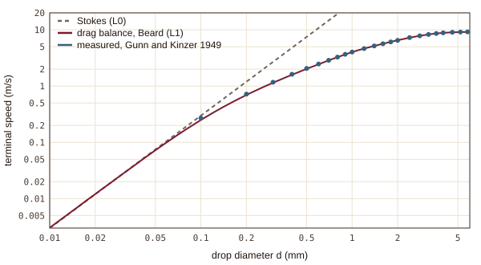
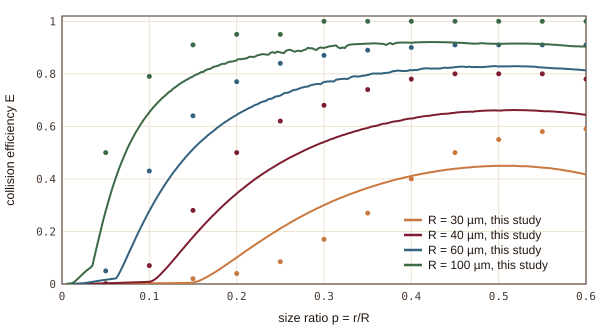
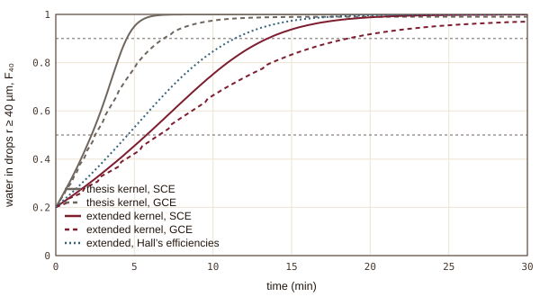
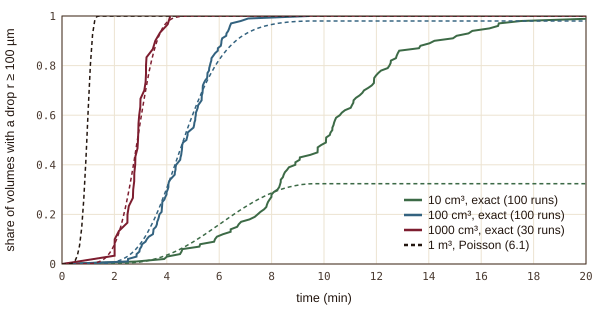

Bachelorarbeit, Leipzig 2022 · als Vorlesungsskript neu aufgebaut
Wolkenphysik · stochastische Koaleszenz · numerische MethodenDroplet Collection
Wie aus Wolkentröpfchen Regen wird
Ein Wolkentröpfchen ist zehn Mikrometer groß und sinkt einen Zentimeter pro Sekunde; ein Regentropfen enthält eine Million davon. Die Schwerkraft sammelt sie ein: Ein Tropfen, der etwas größer ist als seine Nachbarn, fällt etwas schneller, holt die Tröpfchen unter sich ein und verschluckt einige von ihnen. Dieses Vorlesungsskript baut Numa Koudsies Bachelorarbeit, Collisional Ice Multiplication Processes in Clouds (Leipzig, 2022), aus ersten Prinzipien neu auf, einen physikalischen Effekt nach dem anderen: der Stokes-Widerstand, hergeleitet aus der Stromfunktion, eine Widerstandsbilanz für jede Größe, die Bahnen der Tröpfchen um einen fallenden Tropfen, die Energie, die entscheidet, ob sich berührende Tropfen verschmelzen, die Koaleszenzgleichung für eine ganze Population, der exakte Zufallsprozess dahinter, Turbulenz und Eis. Jede Zahl, die keiner Quelle zugeschrieben ist, berechnet das Modell, das auf der Seite läuft, und sie wird geprüft.
- 5.8 / 13.5min
- bis die Hälfte und neun Zehntel des Wassers in Tropfen über 40 µm stecken; mit der Unsicherheit der Kollisionseffizienz neun Zehntel bei 10.5 bis 13.5 min
- 1min
- bis zum ersten Nieseltropfen in einem Kubikmeter, zehnmal früher als die Hälfte des Wassers: Glück
- 50–1600×
- weniger neues Eis aus Eis-Eis-Stößen, als die Regel der Arbeit annahm
- 2.1 %
- größter Fehler der Fallgeschwindigkeit gegenüber Messungen, ab 0.3 mm
1.1Die Wolke und die drei Fragen
Der Testfall ist die warme Wolke der Arbeit: \(300\ \mathrm{cm^{-3}}\) Tröpfchen um \(8\ \mathrm{\mu m}\) und \(1\ \mathrm{cm^{-3}}\) Sammeltropfen um \(40\ \mathrm{\mu m}\), bei \(10\,{}^{\circ}\mathrm{C}\) und \(850\ \mathrm{hPa}\), in einem geschlossenen, gut durchmischten Kasten. Das Skript fragt, wie lange es dauert, bis der größte Teil des Wassers in großen Tropfen steckt, wie lange, bis in einem gegebenen Volumen der allererste Nieseltropfen erscheint, und ob Stöße in einer kalten Wolke neues Eis erzeugen. Eine Leiter von Modellen beantwortet diese Fragen; jede Sprosse fügt einen Effekt hinzu, mit einer berechneten Zahl, die zeigt, dass er zählt.
1.2Was der Neuaufbau fand, je eine Zeile
- Fallgeschwindigkeit. Das Stokes-Gesetz verletzt seine eigene Annahme bei \(41\ \mathrm{\mu m}\), wo seine Reynolds-Zahl 1 erreicht. Eine Widerstandsbilanz über die Davies-Zahl trifft die Messungen von Gunn und Kinzer ab 0.3 mm auf 2.1 % genau, und in der ganzen Population bremst sie das Wachstum um den Faktor 1.76, weit mehr als bei einem einzelnen Tropfen.
- Kollisionseffizienz. Nur ein Drittel der Tröpfchen auf der Bahn eines \(40\ \mathrm{\mu m}\)-Tropfens berührt ihn (\(E = 0.344\)); die übrigen reiten auf der Luft um ihn herum, die er beiseiteschiebt. Der Bahnlöser reproduziert die kritischen Stokes-Zahlen \(1/12\) und \(1.21194\). Die Effizienz ist die größte einzelne Änderung der Leiter und die unsicherste: Sie verschiebt die Zeit bis zu neun Zehnteln des Wassers von 13.5 auf 10.5 min.
- Koaleszenz. Für Wolkentröpfchen beträgt die Stoßenergie \(10^{-5}\) der Oberflächenenergie, also verschmelzen sich berührende Tropfen; mit Stokes-Geschwindigkeiten treffen große Tropfen so hart, dass der Kern der Arbeit sie unterhalb eines Millimeters nicht mehr verschmelzen lässt.
- Glück. Der exakte Zufallsprozess, Tropfen für Tropfen in Volumina bis zu einem Liter abgetastet, bildet den ersten \(100\ \mathrm{\mu m}\)-Tropfen durch Verschmelzen von Sammeltropfen untereinander, in jedem einzelnen von 230 Läufen; ein Poisson-Argument trägt das Ergebnis bis zu einem Kubikmeter.
- Eis. Bei \(-10\,{}^{\circ}\mathrm{C}\) ist die Splitterbildung beim Bereifen abgeschaltet, das Zerbrechen der kleinen Eiskugeln der Arbeit bei Eis-Eis-Stößen erzeugt fast nichts, und nur das Zerspringen gefrierender Tropfen könnte zählen, zwischen null und einigen neuen Teilchen pro cm³ und Minute: So weit streuen die Messungen.
1.3Vier Abbildungen aus dem Skript




1.4Die Seiten des Projekts
- SimulationDie Koaleszenzgleichung, die Bahnen der Tröpfchen und eine exakte Zufallswolke, in Ihrem Browser.
- VorlesungsskriptZehn Kapitel und ein Anhang, von einem Tropfen bis zum Eis: 22 nummerierte Gleichungen, jede mit ihrem Bild, ihrer Herleitung und den eigenen Zahlen des Modells.
- AufgabenFünf durchgerechnete Aufgaben mit den Zahlen des Modells.
- PrüfungenExakte Lösungen, unabhängige Nachrechnungen in Python und ein Skript, das jede im Text zitierte Zahl findet.